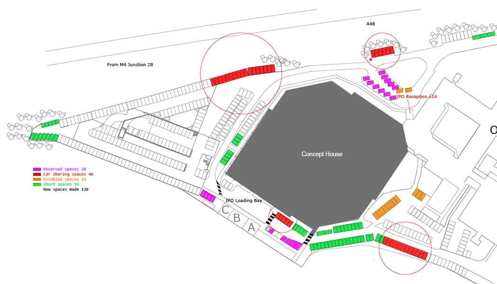

Preperation will help make your first visit a smooth experience
If you are travelling with your own vehicle and your registration is not yet on our system you will likely be stopped by security. There is an electronic sign that will display your number plate to warn you in advance. If this happens, please stop in the layby shortly before the security gate. This will help free up the entrance for authorised vehicles.
There is an intercom box that will allow you to communicate with our security team. They will likely be expecting you. If you tell them your name and that you are a new starter, they will be able to verify your identity and direct you to the multi-storey car park.
There is a bus stop located just outside the grounds of the office, only a few minutes’ walk from the security gate, serviced by Route 30 of both Cardiff Bus and Newport Bus.
There is a pedestrian turnstile next to the security hut if you wish to walk onsite. On your first day, you will need to buzz the intercom box next to the turnstile for security to let you through. They will be expecting you, so you should only need to tell them your name and that you are a new starter, they will then direct you to reception at the main entrance.
Once you have received your permanent security pass from the office you will be able to use this to pass through the turnstile without needing to contact security.
Our building is not visible when you first enter the site. It is located behind the ONS building. Follow the road or path around the right hand side of the ONS building, roughly straight on from the security hut and you will reach our main reception. The security staff in the guard hut, or any other staff arriving on-site will be more than happy to provide directions if you require them. Below is a map to help you:
Depending on how you plan to arrive, select the relevant section below for more detailed information: